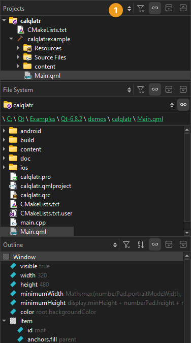

Show and hide sidebars
In some modes, you can use a left and right sidebar to organize different views into project contents. Only views that are relevant to the mode you are working in are available in it.
Select views in the sidebar menu (1):

You can change the view of the sidebars in the following ways:
- To toggle the left sidebar, select (Hide Left Sidebar/Show Left Sidebar) or Alt+0 (Cmd+0 on macOS).
- To toggle the right sidebar, select (Hide Right Sidebar/Show Right Sidebar) or Alt+Shift+0 (Cmd+Shift+0 on macOS).
- To split a sidebar, select (Split). Select new content to view in the split view.
- To close a sidebar view, select (Close).
In some views, right-clicking opens a context menu that has functions for managing the objects listed in the view.
See also Sidebar Views, Show and hide the main menu, and Switch between modes.